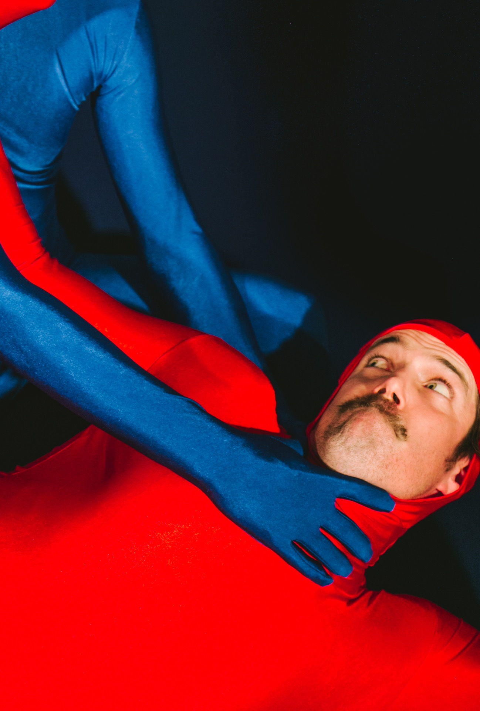

KING TV
Live in Ultimate 3D
When a life spent watching TV affects ones reality, how do you decipher the truth?
Decades of newsworthy events flash by on TV creating the life story of Timothy King Jnr. From his mother's basement turned TV studio, he broadcasts an entire TV channel, using Foley sound effects, produced in real time by his sidekick.
When disaster in his life strikes, King Jnr. escapes into a warped world of confusion. Battling with a sense of self and alter egos, reality merges with fiction, immersing the studio audience in the ultimate 3D experience.
Using TV as a metaphor, KING TV questions how and why we trust and believe what’s beamed into our lounge rooms daily. Manipulating us through fear mongering and praying on our naive nature, how can we escape the strangle hold upon us?
Timothy Ohl
Timothy Ohl is an accomplished Actor, Dancer, Acrobat, Singer and Writer with over 16 years experience devising original physical theatre in collaboration with companies Force Majeure, KAGE, Australian Dance Theatre, Legs on the Wall, Chunky Move, Lucy Guerin Inc., Shaun Parker & Company, Stalker, Theatre of Image and choreographer Meryl Tankard.

Timothy has been writing and performing his own work since 2006, receiving rave reviews for his satire fuelled solo 'Jack' for Sydney Opera House’s sold out IOU series, The beat making 'Squid Dreams' and the darkly humorous 'Naked Habit' at Carriageworks.

His upcoming show 'KING TV - Live in Ultimate 3D' commenced development in 2013 and made its Sydney Comedy Festival debut in 2016. Presents at Tanyanda Theatre at Live from Tandanya / March 15-18 9:45pm / 4:30pm Sat 18.

***Winner of 2010 Green Room Award for Best Male Dancer in Chunky Move's 'Mix Tape'***